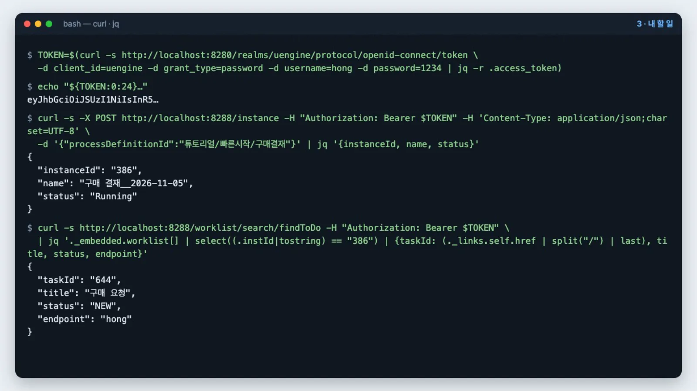
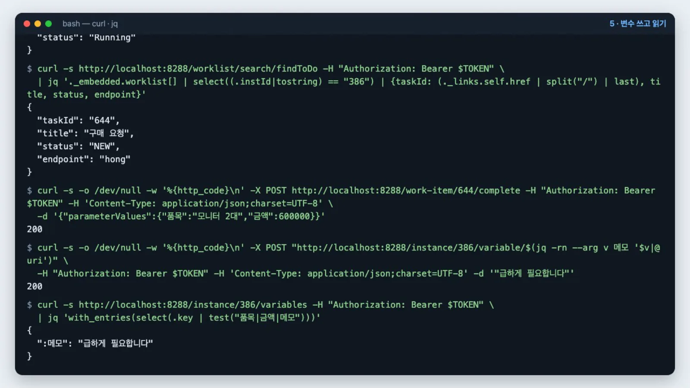
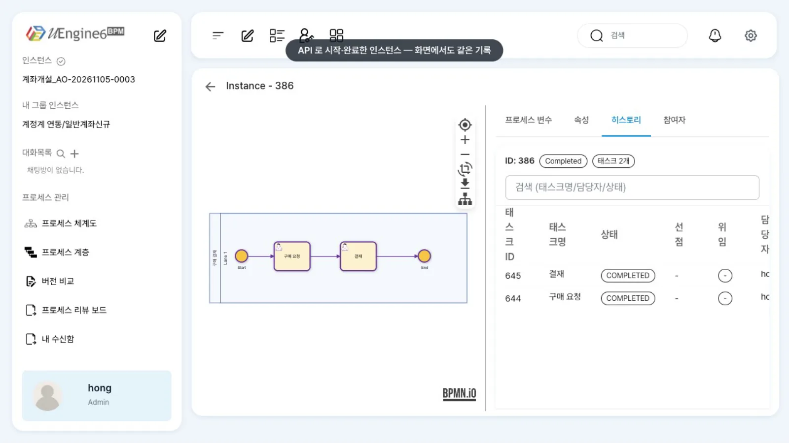

첫 프로세스에서 화면으로 한 일을 curl로 합니다. 토큰을 받고, 인스턴스를 시작하고, 내 할 일에서 작업을 찾아 완료하고, 변수를 쓰고 읽은 뒤, 관리자 화면에서 같은 기록을 확인합니다.
무엇을 · 왜#
다른 시스템에서 프로세스를 시작하거나 해당 시스템의 화면에서 작업을 완료할 때는 REST API를 씁니다. 이 장에서는 가장 짧은 경로만 따라갑니다. 전체 목록은 REST API 레퍼런스에 있습니다.
| 단계 | 요청 | 핵심 |
|---|---|---|
| 토큰 | POST :8280/realms/uengine/protocol/openid-connect/token |
클라이언트 uengine, 비밀번호 방식 |
| 시작 | POST /instance |
본문 {"processDefinitionId": "<정의 아이디>"} |
| 내 할 일 | GET /worklist/search/findToDo |
작업 번호는 _links.self.href의 끝 |
| 완료 | POST /work-item/<작업 번호>/complete |
아규먼트 값은 parameterValues |
| 변수 | POST /instance/<번호>/variable/<이름>, GET /instance/<번호>/variables |
값은 JSON, 프로세스 변수 키는 :이름 |
| 상태 | GET /instance/<번호> |
status가 Completed |
- 요청은 모두 게이트웨이
http://localhost:8288로 보내고Authorization: Bearer <토큰>을 붙입니다. 이 스택에서는 세션 쿠키 없이 Bearer만으로 통과합니다. - 사용자를 가리키는 값(
endpoint)은 이메일이 아니라 사용자 이름(hong)입니다. - 결과에서 필요한 부분만 보기 위해
jq를 씁니다.
따라 하기#
영상은 터미널에서 아래 명령을 실행한 결과를 그대로 촬영했습니다(토큰 값만 앞 24자로 줄였습니다).
- 토큰을 받습니다.
TOKEN=$(curl -s http://localhost:8280/realms/uengine/protocol/openid-connect/token \ -d client_id=uengine -d grant_type=password -d username=hong -d password=1234 | jq -r .access_token) echo "${TOKEN:0:24}…" - 인스턴스를 시작합니다. 정의 아이디는 화면에서 저장한 경로에서
.bpmn을 뺀 값입니다.영상에서 받은 응답:curl -s -X POST http://localhost:8288/instance -H "Authorization: Bearer $TOKEN" \ -H 'Content-Type: application/json;charset=UTF-8' \ -d '{"processDefinitionId":"튜토리얼/빠른시작/구매결재"}' | jq '{instanceId, name, status}'{ "instanceId": "386", "name": "구매 결재__2026-11-05", "status": "Running" }
시작과 내 할 일 - 내 할 일에서 작업을 찾습니다. 응답 본문에는
taskId가 없고,_links.self.href끝의 숫자가 작업 번호입니다.영상에서 받은 응답:curl -s http://localhost:8288/worklist/search/findToDo -H "Authorization: Bearer $TOKEN" \ | jq '._embedded.worklist[] | select((.instId|tostring) == "<인스턴스 번호>") | {taskId: (._links.self.href | split("/") | last), title, status, endpoint}'작업 번호는{ "taskId": "644", "title": "구매 요청", "status": "NEW", "endpoint": "hong" }644입니다. 다음 단계의<작업 번호>자리에 넣습니다. - 작업을 완료합니다. 아규먼트 값을
parameterValues로 보냅니다. 성공하면 본문 없이200을 반환합니다.curl -s -o /dev/null -w '%{http_code}\n' -X POST http://localhost:8288/work-item/<작업 번호>/complete \ -H "Authorization: Bearer $TOKEN" -H 'Content-Type: application/json;charset=UTF-8' \ -d '{"parameterValues":{"품목":"모니터 2대","금액":600000}}' - 변수를 쓰고 읽습니다. 작업에 보낸 아규먼트 값(품목·금액)은 데이터 매핑을 하지 않아 프로세스 변수에 저장되지 않습니다. 변수는 API로 직접 쓸 수 있습니다. 값은 JSON으로 해석되므로 문자열은 따옴표를 포함해 보냅니다. 한글 이름은 주소에 넣을 때 인코딩합니다.
두 요청 모두
curl -s -o /dev/null -w '%{http_code}\n' -X POST \ "http://localhost:8288/instance/<인스턴스 번호>/variable/$(jq -rn --arg v 메모 '$v|@uri')" \ -H "Authorization: Bearer $TOKEN" -H 'Content-Type: application/json;charset=UTF-8' -d '"급하게 필요합니다"' curl -s http://localhost:8288/instance/<인스턴스 번호>/variables -H "Authorization: Bearer $TOKEN" \ | jq 'with_entries(select(.key | test("품목|금액|메모")))'200을 반환하고, 변수 목록에는 직접 쓴 값만 있습니다(품목·금액은 없습니다).{ ":메모": "급하게 필요합니다" }
변수 쓰고 읽기 - 다음 작업 「결재」를 완료합니다. 3단계의 요청으로 다시 조회하면 「결재」가 보입니다. 같은 방식으로
{"parameterValues":{"결재의견":"승인합니다"}}를 보내 완료합니다. - 상태를 확인합니다.
영상에서 받은 응답:
curl -s http://localhost:8288/instance/<인스턴스 번호> -H "Authorization: Bearer $TOKEN" | jq '{instanceId, name, status}'{ "instanceId": "386", "name": "구매 결재__2026-11-05", "status": "Completed" } - 화면에서도 확인합니다. 관리자 화면
/admin/<인스턴스 번호>의 「히스토리」 탭에 API로 끝낸 두 작업이COMPLETED로 남아 있습니다.
관리자 화면
설정 레퍼런스#
요청 본문#
| 요청 | 본문 | 비고 |
|---|---|---|
POST /instance |
{"processDefinitionId": "튜토리얼/빠른시작/구매결재"} |
선택: roleMappings(레인 → 사용자 이름), correlationKeyValue, processVariableValues |
POST /work-item/{taskId}/complete |
{"parameterValues": {"품목": "모니터 2대", "금액": 600000}} |
담당자 본인만 완료할 수 있습니다. 다른 사용자는 403 Only the current work item owner can complete this task |
POST /instance/{id}/variable/{이름} |
JSON 값("급하게 필요합니다", 600000, {"a":1} …) |
이름은 URL 인코딩 |
응답 구조#
| 요청 | 응답 |
|---|---|
POST /instance · GET /instance/{id} |
{"name", "instanceId", "status", "defVer", "corrkey", "_links": {…}} |
GET /worklist/search/findToDo |
HAL: {"_embedded": {"worklist": [{"title", "status", "endpoint", "instId", "trcTag", "dispatchOption", …, "_links": {"self": {"href": ".../worklist/<작업 번호>"}}}]}} — 완료되지 않은 내 작업 전부 |
POST /work-item/{taskId}/complete |
200, 빈 본문 |
GET /instance/{id}/variables |
엔진이 저장한 모든 값입니다. 프로세스 변수는 ":메모"처럼 :로 시작. UserTask_1:_status:prop 같은 키는 엔진 내부 상태 |
저장소 매뉴얼과 다른 점
uEngine6 저장소의 docs/local-install-guide.md(2026-08-19)는 「endpoints 는 이메일」, 「게이트웨이는 쿠키와 Bearer 가 둘 다 필요」라고 적었습니다. 이 튜토리얼의 브랜치 상태에서는 사용자 이름을 쓰고, Bearer만으로 통과합니다.
알려진 제약#
| 증상 | 우회 |
|---|---|
GET /instance/{id}/variable/{한글 이름}의 값이 ???로 깨짐 |
GET /instance/{id}/variables에서 :이름 키의 값을 읽습니다 |
시작 응답의 corrkey가 null (상관 키를 넣어도) |
GET /work-item?corrKey=<키>로는 찾을 수 있습니다 |
findToDo에 다른 인스턴스의 작업도 섞여 나옴 |
instId로 거르거나 GET /instance/{id}/worklists를 씁니다 |
확인 문제#
완료할 때 보낸 「품목」이 `/variables`에 없는 까닭은 무엇인가요?
「품목」은 작업의 아규먼트이고, 이 정의에는 아규먼트 → 프로세스 변수 매핑이 없습니다. 매핑을 넣거나(작업 입력값과 데이터 매핑), POST /instance/{id}/variable/{이름}으로 직접 씁니다.
`findToDo` 응답에서 작업 번호는 어디에 있나요?
본문 필드에는 없고 _links.self.href(…/worklist/<작업 번호>)의 끝에 있습니다. 인스턴스의 작업을 번호와 함께 보려면 GET /instance/{id}/worklists가 편합니다.
윤팀장의 토큰으로 홍길동의 「구매 요청」을 완료하면 어떻게 되나요?
403 Only the current work item owner can complete this task를 반환합니다. 작업은 담당자 본인만 완료할 수 있습니다.